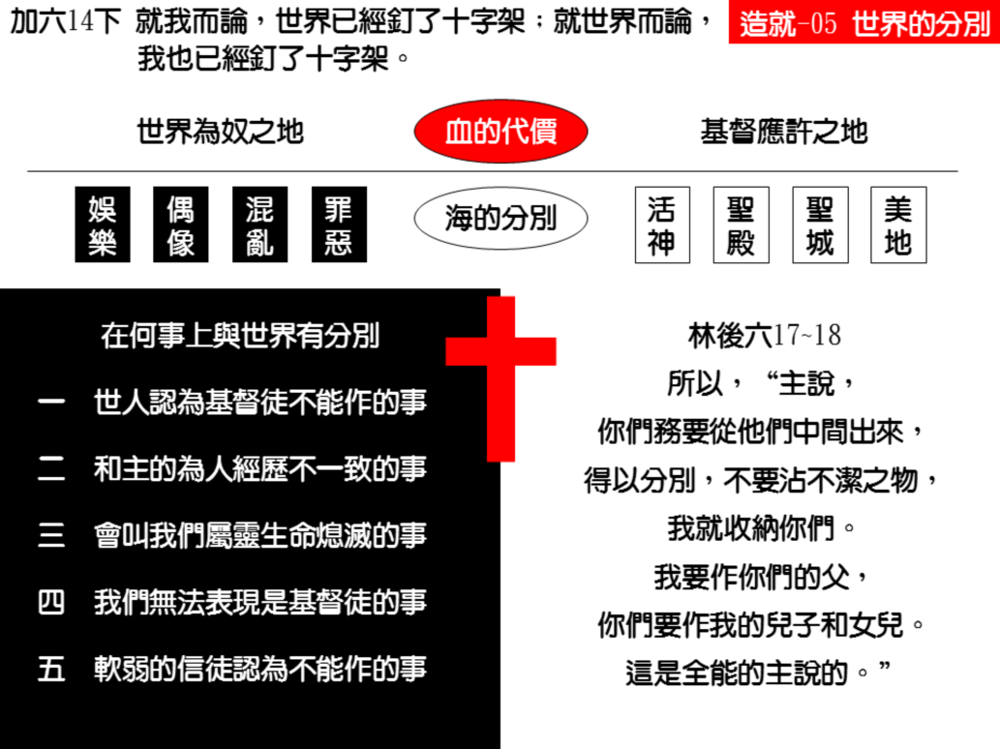

诗歌：334 首、335 首
重要经文：
约翰壹书二章十五至十六节：不要爱世界，和世界上的事。人若爱世界，爱父的心就不在他里面了；因为凡世界上的事，就是肉体的情欲、眼目的情欲、并今生的骄傲，都不是出于父，乃是出于世界。
雅各书四章四节 岂不知与世界为友，就是与神为敌么？所以凡想要与世界为友的，就成了神的仇敌。
哥林多后书六章十七至十八节：所以，“主说，你们务要从他们中间出来，得以分别，不要沾不洁之物，我就收纳你们。” “我要作你们的父，你们要作我的儿子和女儿。这是全能的主说的。”
纲目要点：
壹 以色列人出埃及的豫表——出十8~11，21~26，十二6~11：
一 救赎的结果就是出去。
二 法老世界的王会多方留难。
三 我们的路是在旷野里。
四 我们在世界上是寄居的，是客旅。
贰 在何事上与世界有分别：
一 世人所认为基督徒不能作的事。
二 和主所受的对待不能一致的事。
三 一切叫我们属灵生命熄灭的事。
四 一切不能叫我们表现是基督徒的事。
五 软弱的信徒所认为不能作的事。
叁 从世界出来就被全能的主所接纳——林后六17~18。
信息选读：
关于与世界的分开，在圣经里的命令是相当多。埃及代表世界的享乐，迦勒底的吾珥代表世界的宗教，巴别塔代表世界的混乱，所多玛代表世界的罪恶。圣经里用四个不同的地方，来代表世界，同时给神的儿女看，人该怎样脱离世界。
壹 以色列人出埃及的豫表
救赎的结果就是出去
神要拯救以色列人，乃是用逾越节的羊羔。当神的使者出来击杀埃及地的每一个长子时，看见门上有血的，灭命的使者就越过去。我们蒙恩得救的人，都是被血救赎的人。可是请记得，血一救赎，你就得动身，你就得出门。所有被血拯救的人，都得在当天晚上就动身。救赎的第一个结果就是分别，就是出去，就是离开。
法老这世界的王会多方留难
我们从以色列人的出埃及来看，就看见他们要出埃及是何等的难！因为埃及一直拉着他们。法老第一次是对摩西说，你们就在埃及地敬拜，你们就在埃及地事奉神罢，你们不要到旷野去。以后，又劝他们不要走得太远。第三次，就题起只要你们壮年人去。第四次，又对他们说，人可以都去，牛和羊要留下。法老的路就是说，你们要在埃及地事奉神。这是他基本的思想。你们可以作神的子民，但是你们要在埃及作。他知道人如果在埃及事奉神，这一个人就没有见证。他知道人如果在埃及事奉神，这一个人也得事奉法老；这一个人要作神的仆人，也得作撒但的仆人。
我们的路是在旷野里
我们要看见，世界是有两种：一种世界是一个地方，还有一种世界是一个组织。有这么许多的东西，与这些物质的东西发生关系。这些好看的东西，叫人能够有眼目的情欲，叫人能够有肉体的情欲，叫人能够有虚荣心，这一个是埃及。世界还有另外一个意思，就是世界是一个住的地方。我们基督徒今天是从这一个世界的制度，这一个世界的组织里出来。换句话说，我们还是在世界上，但是这一个世界是一个旷野。世界对于我们是什么呢？潘汤先生（D.M.Panton）说，“我活着的时候，是一条路；我死的时候，是一个坟墓。”信徒在地上活着，世界不过是一条路；信徒死的时候，世界不过是一个坟墓，让他埋在这里。我们总得与世界的人有分别。
我们在世界上是寄居的，是客旅
我们必须看见，我们在这世界上是寄居的，是作客旅的。从今以后，我们的脸是向着应许之地而去，我们与埃及有了分别。那一个分别的根据乃是血。是血把你买回来。比方你到钟表店里去买表，买了表怎么样？什么时候有买的事，什么时候就有离开的事，我不能买了表，放在那里，对老板说，你用罢！没有这回事。买就是离开。什么地方有买的事发生，什么地方就有离开的事发生。请你们记得，血买了我们，我们就得离开世界。人一被主的血买来，就得往应许之地去。没有被买的人不出来，一被买就出来了。我如果被主买了，我就得离开世界跟着主走。
贰 在何事上与世界有分别
世人所认为基督徒不能作的事
凡世界上的人认为基督徒所不能作的事，你们都得离开。世界上的人对于基督徒，个个都定规了一个水准，你如果连这一个水准都赶不上，你不得了。你作一件事，不能给外邦人说，基督徒也作这一件事么？如果是那样，你就了了。有的事情是罪；他作他不说话；你若作，他就说话。所以外邦人认为不该作的，我们不能作。这是起码的要求。外邦人说，你们基督徒不好作这样的事，我们就要离开。
和主受的对待不能一致的事
主在世上是受羞辱的，我们不能在这里得荣耀。主所经过的路，也是我们所需要经过的。主说，仆人不能大于主人，学生不能高过先生。如果他们对待我们的主人是这样，就不能盼望他们对待我们两样。主在地上是如何的情形，我们也要跟着走。
一切使我们属灵生命熄灭的事
什么是世界？我们可以抓住一个基本的原则：一切的事，凡能熄灭你在主面前属灵生命的，那些就是世界。如果有一件事，能够叫你在神面前祷告不热心，这就是世界。如果有一件事，能够叫你没有兴趣去读神的话，这就是世界。如果有一件事，能够叫你在人面前开不出口来作见证，这就是世界。世界，就是一个空气，那一个空气叫我冷淡，叫我萎缩，叫我爱主思慕主的心冷下去了。凡一切能叫我属灵的光景在神面前熄掉的，就是世界。那一个，必须弃绝。
一切不能叫我们表现是基督徒的事
任何的社交，来往，宴会，只要会叫我们把灯放在斗底下的，就是世界。许多神的儿女，就是因为社交，没有法子分清楚，就被人逐渐拖到世界里去。所以我们如果真要走一条与世界分别的路，我们就得注意说，每一次我与人来往的时候，必须是能显出我基督徒的地位来。如果不能显出基督徒的地位，总是以离开为妙。
叁 从世界出来就被全能的主所接纳
林后六章十八节，主对我们说，“你们务要从他们中间出来，得以分别，不要沾不洁之物，我就收纳你们。我要作你们的父，你们要作我的儿子和女儿，这是全能的主说的。”主说，你们为着我离开了那么多，从他们中间出来，与他们分别，绝了关系，不摸不干净的，你们的两只手空了，什么都没有了。当你们这样作的时候，我就收纳你们。请记得，感觉到主收纳的人，都是与世界分别的人。许多人在面前，不感觉主是至宝，都是因为没有把万物看作粪土。没有把万物看作粪土，定规以地上的东西当作至宝。这样的人，就不知道神收纳他，就不知道神是我们的父，我们是神的儿女；并且不知道说这话的，乃是全能的主。所以初信的人，应当从世界出来，才能尝到主的甘甜滋味。那一边一放，这一边就能感到主的滋味。 （摘自初信造就第五篇）
课程复习：
一 我们得救后与世界的关系？
二 与世界分别的意义为何？
三 我们在何事上应与世界有分别？
四 我们如何能享受全能之主的收纳？
五 我是否有“与世界分别”得胜或失败的经历？
